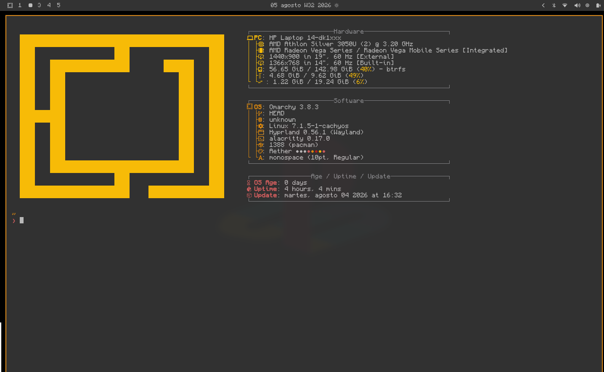

PROYECTO 01
Sistema Contyx
Sistema desarrollado en Python para automatizar la lectura y el procesamiento de facturas electrónicas XML emitidas por el SRI y generar reportes financieros.
DISPONIBLE PARA COLABORAR - QUITO, ECUADOR
Estudiante de cuarto semestre de Ingeniería de Software. Diseño y construyo software útil y enfocado en resolver problemas reales.
Tengo 20 años y prefiero que me digan simplemente Deivit. Estoy cursando el cuarto semestre de Ingeniería de Software en la Universidad de las Fuerzas Armadas ESPE.
Me interesa el desarrollo de sistemas y la resolución de problemas lógicos. Entre las tecnologías que manejo se encuentran C++, Python, Java y R Studio.
Además, tengo experiencia en el manejo y configuración de entornos Linux, utilizando distribuciones como Omarchy Linux y CachyOS con gestores de ventanas como Hyprland y Bspwm.
Sistema desarrollado en Python para automatizar la lectura y el procesamiento de facturas electrónicas XML emitidas por el SRI y generar reportes financieros.
Configuración de dotfiles y entorno para Omarchy Linux. Integración personalizada del sistema y terminal utilizando la tipografía Monocraft.

Lo que hago cuando no programo
Partidas de Minecraft, Rocket League, Fortnite y Valorant.
Rutas largas y ciclismo al aire libre.
Deporte y partidos con amigos.
Escuchar temas de Joji, Mac DeMarco y otras cosas.